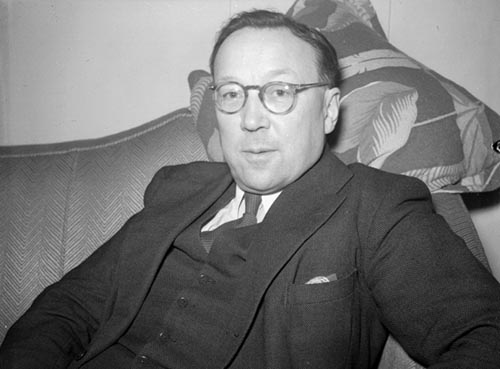
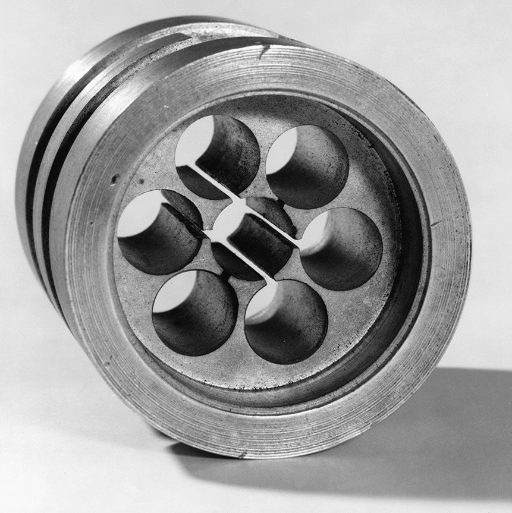

Building a Warning System
The United States was also developing radio detection. Albert Taylor, Leo Young, and Lawrence Hyland filed a patent in 1933 for detecting objects by radio. The patent describes finding aircraft and ships. It shows that researchers were thinking about military uses before the war began.
In 1935, Robert Watson-Watt and Arnold Wilkins demonstrated that radio waves could detect an aircraft. Their test used a BBC transmitter and a British bomber. It helped show that radio detection could become a useful part of Britain's air defense.



Britain then developed Chain Home, a network of radar stations along its coast. Stations were in place when World War II began in 1939. This gave Britain a way to find approaching aircraft before they reached the country.
In 1940, John Randall and Harry Boot developed a cavity magnetron that produced powerful microwaves. Britain shared this technology with the United States. British research and American resources helped improve radar. This shows how cooperation between countries helped turn a scientific idea into equipment that could be used in war.


.jpg){kind=link}
The threat of war gave governments a reason to spend money on detection. Research needed equipment and funding before it could become a defense system.
“Give them the third best to go on with; the second best comes too late, the best never comes.”